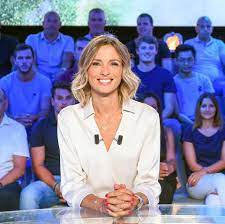

Tomas HERIGAUT
18 ans
Étudiant en journalisme
Sportif
Sportif depuis tout petit, et aimant pratiquer et regarder différents sport. La musique, les films et l'humour font parti de mon quotidien, même si je ne suis pas très fort en matière de rigolade.
Sport
J'ai pratiqué l'acthétisme, le tennis, le basket durant mon enfance, mais mon attirance pour le foot était trop forte. Commençant ce sport en étant joueur de champ, c'est au poste de gardien que j'ai progresser et où je me suis le plus épanoui. il est donc assez simple de me repérer sur un terrain (ici je suis en jaune).
EFJ
Malheureusement, je n'est pas pu devenir joueur professionnel et c'est donc naturelement que je me suis redirigé vers une autre voix. Tout fraichement diplomé du Baccalauréat avec mention assez bien, obtion Mathd et Svt, je pensais, d'abord, faire une fac de sport avec option kinésithérapie. J'ai eu la chance de pouvoir intégré l'école du nouveau journaliste (l'EFJ).
Logo

Qu'est-ce que l'EFJ
L'EFJ, école de journalisme 2.0, forme des journalistes plurimédia, capables de s'adapter à un monde digitalisé en constante évolution. Découvrez la formation journalisme de l'EFJ Paris : une approche innovante en phase avec les nouveaux besoins et métiers du journalisme d'aujourd'hui. Notre école de journalisme à Bordeaux répond aux enjeux d'une profession qui se transforme par l'explosion des réseaux sociaux, de la vidéo, de l'usage du smartphone et le développement des nouvelles technologies de l'information. Formez-vous à la rigueur journalistique traditionnelle tout en maîtrisant les nouveaux outils digitaux et les nouveaux mode de diffusion. Des compétences polyvalentes et indispensables au nouvel environnement des médias.
Mes idoles
Le premier commentateur qui m'as donné l'envie de devenir journaliste est Benjamin Da Silva, sur bein sport. Sa pation, son analyse et son duo magique avec Omar Da Fonseca m'ont donné un nouveau recart sur ce sport.
Ces dernières anées celui qui m'as conforté dans mon choix de devenir journalise sportif est Jérome Sillon. Sur RMC Sport, il arrive a transmettre des émotions travers ces commentaires pendant le match et pour n'importe qu'elle équipe, française ou non.

En présentateur c'est une présentatrise et il sagit d'Isbelle Ithurburu. Toujours souriante avec l'analyse et les débats qui sont, généralement, captivants. Présentatrice du Canal Rugby Club elle fait partie de mes idoles.

Mais ma plus grande inspiration et mon modèle c'est Julien Fébreau. Commentateur officiel de la Formule 1 sur Canal+ il m'as fait frisonné plus d'une fois, m'as donné la passion de la F1 et m'as transmit l'amour du journalisme sportif.
Réseaux sociaux
Instagram, Twitter
Lien :
Mon CV